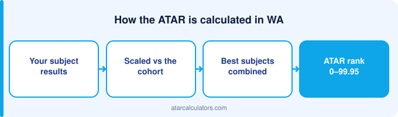

To improve your WA ATAR, focus on your rank within each ATAR course, because ranking drives scaling and moderation. Choose courses you can score highly in, understand how WACE scaling works, protect your best courses, and sharpen exam technique for your ATAR course exams. Adjustment and bonus points do not change your ATAR itself, but they can lift your selection rank for specific university courses.
Key takeaways
- Your ATAR is not fixed until your final exams.
- Focus on your rank within each ATAR course — it drives scaling.
- Choose courses you can score highly in, not just high-scaling ones.
- Your final course score is 50% school assessment, 50% ATAR course exam.
- Only your best four scaled scores count towards your ATAR.
- Adjustment points lift your selection rank, not your ATAR itself.
- Sharpen exam technique for your ATAR course exams.

Can you still improve in Year 12?
Yes. Your WA ATAR reflects where you finish, not where you start Year 12. The months before your ATAR course exams are often when students improve most, as content consolidates and exam skills sharpen.
The key is to improve where it counts. Because your ATAR is built from your best four scaled course scores, targeted effort on the right courses moves your ATAR more than spreading effort thinly.
So treat your current estimate as a starting point. With a focused plan, there is real room to lift your ATAR before your exams.
Why your rank matters most
The single most important thing to understand is that scaling acts on your rank within each course. Your position relative to the other students in your course is what determines your scaled score.
So your goal in every ATAR course is to rank as high as you can. Scaling then adjusts the whole course up or down, but it never changes your position within it. A strong rank always produces a stronger scaled score.
This is why beating the students around you in each course is the most reliable way to lift your ATAR. Rank is the lever scaling pulls.
How WACE moderation works
In the WACE, your final score in each ATAR course is a combination of your school assessment and your ATAR course exam, weighted evenly. The exam does more than contribute marks: it moderates your school assessment.
Moderation means your school’s assessment marks are adjusted so they are comparable across schools, using how your cohort performs in the external exam. Your rank within your school is preserved; the marks are aligned to a common standard.
So both parts matter. Strong school assessment sets your rank, and a strong exam performance lifts your whole cohort’s moderated marks. Preparing well for the exam protects and improves your school assessment too.
Only your best four count
Your ATAR comes from your best four scaled course scores, added into a Tertiary Entrance Aggregate. This has a useful implication: a weaker fifth course does not drag your ATAR down.
So you can attempt a fifth or sixth ATAR course without risk, and if one goes poorly, it simply does not count. This gives you a safety margin and room to find your strongest four.
It also means your focus should be on making four courses as strong as possible, rather than spreading yourself evenly across five or six. Depth in your best four beats thin effort across all.
Choosing the right courses
Course choice matters, but not in the way many students think. The best courses for your ATAR are the ones you can rank highly in, which usually means courses that suit your strengths and that you are motivated to work at.
A strong rank in a course you are good at beats a weak rank in a high-scaling course you struggle with. So start from your strengths, then consider scaling as a secondary factor. See best scaling subjects in WA.
Also check any prerequisites for the university courses you want. A required course matters more than scaling, because it opens a door that scaling cannot.
Use scaling wisely
WACE scaling rewards strong cohorts, so the higher maths and sciences tend to scale well. But scaling only helps if you can rank well in those courses. A high-scaling course you sink in gains you nothing.
So use scaling as a tiebreaker, not a driver. If you can do equally well in two courses, prefer the one that scales better. But never choose a course purely for scaling if it would pull your rank down.
Your ATAR course exams
Your ATAR course exams are half of your final score and the tool that moderates your school assessment. So exam performance has an outsized effect, and improving it is one of the most efficient ways to lift your ATAR.
Prepare with past ATAR course exams under timed conditions. Learn the format, the mark allocations, and how to pace yourself. These exam skills convert the knowledge you already have into marks when it counts most.
Protect your strong courses
Lifting weak courses should not come at the cost of your strong ones. Your best courses contribute most to your ATAR, so letting them slip while you fix weaknesses can cancel out your gains.
Keep your strong courses ticking over with steady revision, while you direct extra effort at the weaker ones. The aim is to raise your overall aggregate, not simply shift effort around.
Adjustment and bonus points
WA universities offer adjustment factors, sometimes called bonus points, for certain courses, subjects, equity circumstances, or regional background. These do not change your ATAR itself. Instead, they add to your selection rank for a specific course.
So your ATAR stays the same, but the rank used to consider you for a particular course can be higher. This can make a real difference at the margin of a cutoff. Check each university’s adjustment schemes for the courses you want.
A tool like a selection rank calculator can help you see how adjustment points affect your rank for a given course, separate from your ATAR.
Lift your weakest high-value course
Not all improvement is equal. A few extra marks in a course that sits among your best four is worth more than the same effort in one that will not count. So identify your weakest course that still makes your top four.
That course is where focused effort pays off most: it counts towards your aggregate, and it has the most room to rise. Fixing it lifts your ATAR more efficiently than polishing a course that is already strong.
Sharpen exam technique
Many students lose marks to technique rather than knowledge: misreading questions, poor timing, or leaving parts unanswered. Fixing this lifts your marks without learning new content, which makes it one of the quickest wins.
Practise with past exams, learn the command words, and manage your time so you attempt every question. Small technique gains across several courses add up to a meaningful ATAR difference.
Track your progress
Re-check your estimated ATAR as your marks improve, so you can see whether your effort is working and where to focus next. A rising estimate is both a check on your plan and a motivator.
Update your marks after each round of assessment. If the number is moving, your plan is working; if not, adjust where you are putting your effort. See more ways to improve a predicted ATAR.
Model your WA ATAR
To plan your improvement, use our WACE ATAR calculator. Enter your course scores to see your estimated ATAR, and test how lifting specific courses would change it.
Seeing the effect of a few extra marks in your best four often makes the plan clear. Focus your effort where it moves your aggregate most, and track it as you go.
Stay well while you push
Pushing to lift your ATAR does not mean running yourself into the ground. Sleep, breaks and exercise protect the focus and memory you need for your ATAR course exams. A burnt-out student underperforms, whatever their ability.
So build a routine you can sustain: steady, focused study with real rest, and enough sleep before exams. The goal is to arrive at your exams sharp and prepared, not exhausted. Consistent, manageable effort over the year beats last-minute cramming, both for your marks and for your wellbeing.
Make a simple plan
Before adding extra study, spend an hour making a plan. List your ATAR courses, your current marks, and the four most likely to make your best-four aggregate. Then rank the gaps by size and by how much each course counts.
That ranking is your priority order: it tells you where the next hour of study does the most good. Revisit it every couple of weeks as your marks change, so your effort stays aimed at the courses that move your ATAR most.
Common questions
Can you still improve your ATAR in Year 12?
Yes. Your WA ATAR reflects where you finish, not where you start. Focused effort in the months before your ATAR course exams, especially on your best four courses, genuinely moves your ATAR.
Does subject choice affect your ATAR?
Yes, but the best courses are the ones you can rank highly in. A strong rank in a course that suits you beats a weak rank in a high-scaling course you struggle with. Start from your strengths, then weigh scaling.
Do adjustment or bonus points raise your ATAR?
No, they do not change your ATAR itself. Adjustment points add to your selection rank for a specific university course, so the rank used to consider you can be higher while your ATAR stays the same.
How important is internal ranking?
Very. Scaling and moderation act on your rank within each course, and your school assessment sets that rank. Ranking as high as you can in each course is the most reliable way to lift your ATAR.